HIV-infection. Acquired Immunodeficiency Syndrome (AIDS)
HIV-infection (human immunodeficiency virus infection) is an epidemic retroviral disease characterized by profound immunosuppression associated with opportunistic infections, the development of neoplasms, and frequent involvement of the CNS, which can clinically manifest as acquired immunodeficiency syndrome (AIDS). The manifestations are caused by loss of CD4+ lymphocytes (T-helpers) and persistence of HIV in macrophages and dendritic cells, including microglia.
Incidence
By the beginning of 1998, over 500,000 patients with clinically manifested AIDS had been reported in the United States, and on the basis of serologic data, it is estimated that approximately 1,500,000 American residents have been infected with the HIV-virus, causing AIDS. Worldwide it is believed that more than 20 000 000 persons are HIV-infected with over 5 000 000 of clinically manifested AIDS. More than 60 000 persons have died from HIV-infection in USA in 1995, thus making AIDS leading cause of death among men between 25 and 44 years of age and 4th cause of death for the women of that age group in this country. USA to the year 1997 had 40% of reported cases. But the major part of infected individuals (maybe, over 70% if one includes poorly documented cases also and, for sure over 10 000 000 persons) live in sub-Saharan Africa. In Zaire and Uganda between 3 and 6 % of population are involved. In Kenya 90% of tested prostitutes are infected. The most rapid rates of AIDS epidemic progressing in 90ies was reported in Southeastern Asia, including Thailand, India and Indonesia, already having more than 1 500 000 of infected individuals. The number of cases in Caribbean countries and Latin America is also considerable (over 1 000 000 of infected persons, especially in Haiti and Brazil). In Europe over 500 000 cases of infection are reported, with greatest number revealed in France. For a long time ex-USSR republics, as well as Islamic countries and China stood aside of epidemics. But, to the middle of 1998 in Russia 8313 cases were reported and in Ukraine the incidence was even greater. Altogether more almost 180 countries have reported about cases of HIV-infection.
The prognosis of WHO estimates the probable number of HIV-infected worldwide as more than 40 000 000 to the end of 2000 year.
Epidemiology
HIV-infection, as an endemic disease of tropic Africa, possibly, existed there locally for a long time, not discovered and not described by world medicine. It is difficult to trace the probable HIV-infection cases in medical chronicles of the Past, because secondary opportunistic and neoplastic diseases mask its clinical manifestations, and because some regions of sub-Saharan Africa even now are out of total medical record.
The island of Okinawa, the only of Japanese isles, opened for the visits of foreigners (the Portuguese and their African slaves) since late XVII century, is, at the same time, known for locally originated cases of HIV-infection. There is a historical proposal, that AIDS was a cause of death in case of Erasmus from Rotterdam (1466-1536), who was not only adept of cheerful Renaissance philosophy, but also the owner of an African bondmaid.
We can only guess what reason(s) could be blamed for worldwide spread and progressing of this disease into pandemic one. In the epoch of Cold War some paralogically thinking paranoid journalists even insisted seriously that AIDS epidemic is an adverse result of some secret military virological program performed by one of super-powers.
In fact, the case of HIV-infection is not unique in the history of epidemiology. Several times in its history medicine was challenged by new epidemic infectious diseases, appeared unexpectedly from nowhere (and, fortunately, after several bursts subsided or disappeared from epidemiological horizon). An example is so called London’s fever, exploded with several epidemics in England and Holland on the border of 17th and 18th centuries, cropped a large harvest of victims, (due to high contagiosity, severe hemorragic syndrome and bronchopulmonary involvement it produced), and spontaneously vanished from medical annals to the great relief of doctors.
In case of HIV-infection the situation is different because of a long period of slow progressing, when patient is already contagious, but still out of medical attention, able to spread virus.
That’s why the amount of victims worldwide is rapidly cumulated. Initial event, which could change the properties of HIV-virus, was, probably, some mutation. Without any doubts, the broad international contacts, active transcontinental migration and urban changes in post-colonial Africa were of crucial meaning for the spread of HIV. There are, for example, epidemiological research papers, that relate the rapid spread of HIV in Africa with the beginning of trans-African highways functioning.
The epidemiological characteristics of modern HIV-infection are different in its two major foci: USA and sub-Saharan Africa. They also disagree in pediatric and adult patients.
In USA the risk groups are the following (R. Cotran et al. 1997):
- Homosexual of bisexual males constituted by far the largest risk group, accounting for 60 % of the reported cases. This included 6 % who were intravenous drug abusers as well. The transmission of HIV among this group is declining, with no more than half of new cases caused by human heterosexual contacts.
- Intravenous drug abusers with no previous history of homosexuality composed the next largest group, representing about 24 % of all patients. This is the largest heterosexual group of risk.
- Hemophiliacs, especially those, who received large amounts of factor VIII concentrates prior to 1985, make up 1% of all cases.
- Blood and blood component recipients who are not hemophiliacs, but who received transfusions of whole blood or components (e.g., platelets, plasma – virtually all blood products can be dangerous, excerpt Ig, albumin and antithrombin), composed 2 % of the patients. This particular way of transmission has produced recently great public scandal of 1999 in France, where former top medical officials and prime minister were persuaded for they did not prevented the usage of contaminated blood and blood products taken from old, non-checked store.
- Heterosexual contacts of members of all other high-risk groups (most of them – partners of i/v drug abusers) constituted growing number of cases – up to 7 % of the patient population.
- In remaining cases the way of transmission is either unidentified (2,8%) or more exotic (vertical transplacental transmission, transmission from mother to child via breast feeding, transmission via contaminated sperm in artificial insemination and via grafts in transplantation - see below).
In children below 13 years of age (representing 2 % of HIV-infected Americans) sexual way of transmission is not significant. The majority of children, suffering from HIV-infection, are contaminated from their mothers, chiefly via transplacental way or, although seldom, via breast feeding, if there are erosions of nipples in sick mother and oral mucosa defects in contaminated child. In the United States approximately 80% of children with AIDS are known to have an HIV-infected parent. 10% of pediatric AIDS contingent are blood-product recipients.
The epidemiology of AIDS in Africa is quite different from the patterns seen in the United States. This may relate to the pattern of transmission of HIV, especially through heterosexual contact, as is discussed later. In Africa the heterosexuals are in majority among AIDS victims and percentage of heterosexual transmission and vertical transmission from mother to child is much greater, than in USA. Hence, the risk of HIV for women and children in Africa is much higher. The male-to-female ratio of cases of AIDS is approximately 1:1 in Africa, compared with 12:1 in the United States.
The risk of seropositivity in tropical Africa is associated with number of heterosexual partners each year, contacts with prostitutes, and a history of sexually transmitted disease. Prostitutes in these areas have an extremely high prevalence of HIV-1 infection (25 to 88 %).
Most importantly, 90% of AIDS patients in Africa have no identifiable risk factors, such as homosexuality and intravenous drug abuse. . For reasons not entirely clear, it seems that female-to male mode of HIV-1 transmission is not particularly common in the United States, but it may well important in the spread of AIDS in Africa.
Sexual way of transmission is predominant worldwide, virtually making HIV-infection a venereal disease. HIV present not only in semen of a sick male, but also in cervical and vaginal secretions, uterine submucosal macrophages and endotheliocytes of infected women. Male-to-female transmission route is still much more common, than female-to-male one, although in Africa last one is quite significant. Principally, all kinds of coitus are able to transmit HIV. But, the highest risk is reported for rectal contacts (above 50%) and vaginal ones (between 15 and 50%). There are even few cases of transmission via oral sexual acts, provided if oral mucosa was damaged. The traumas and erosions of vaginal, rectal and oral mucosa may increase the risk. Due to this, all sexually transmitted infections, which proceed with ulceration of involved organs (Herpes, syphilis, Haemophilus ducreyi) can serve as co-factors of HIV-infection.
Parenteral transmission of HIV occurs in three groups of individuals: intravenous drug abusers, hemophiliacs who receive factor VIII concentrates, and random recipients of blood transfusion. Of these three, intravenous drug abusers constitute by far the largest group and the one in which spread is the most difficult to control. Transmission occurs by sharing of needles, syringes, and other paraphernalia contaminated with HIV-containing blood. This group occupies a pivotal position in the AIDS epidemic because it represents the principal link in the transmission of HIV-1 to other adult populations through heterosexual activity.
Transfusion-associated AIDS has been caused by as little as one unit of whole blood, but it is more often related to transfusion of pooled blood components from multiple donors, as in the case of hemophiliacs, who receive lyophilized factor VIII concentrates.
As might be expected, blood transfusion is an extremely efficient mechanism of transmission, with approximately 90% of those who receive infected blood developing HIV infection. Fortunately, the screening of donated blood for anti-HIV antibodies, inactivation of the virus by heat treatment of clotting factor concentrates, and more rigid exclusion of donors on the base of individual history at risk for AIDS since 1985 have substantially reduced the risk of transfusion-associated AIDS. Nevertheless, a very small but definite risk of acquiring HIV-1 by blood transfusions persists. The reasons for this are two fold; first, the antibody test for HIV-1 is not foolproof. False negative tests, although very infrequent (four to five per million donors screened) do occur. Second, as is discussed later, antibodies may take three to 17 weeks to develop ("window period") following HIV-1 infection, although blood is already contagious.
Parenteral rout creates small, but definite occupational risk of HIV-infection for medical workers, by exposure of non-intact skin and mucosa to infected tissues in laboratory. Accidental needlestick injury with a needle, containing HIV-infected blood causes the risk of seroconversion, estimated as 0,3%. By comparison, the risk to get hepatitis B in analogous situation is at least 1 chance out of 5. Transmission of AIDS from infected health professional to a patient is registered, although extremely uncommon (risk factor estimated as 0,0024% maximally).
HIV can penetrate into the body of blood-sacking insects. But, no convincing evidence for its spread by insect bites to another person has been obtained, although some concepts explain the broad spread of HIV in Africa by existence of some other routs of transmission, still not known.
Perinatal transmission. This rout is also parenteral. It could occur during pregnancy or in the immediate postpartum period. This may proceed as infection in utero by the transplacental route and with usage of other possible routes of transmission (including exposure to maternal blood and other infected fluids during birth, and transmission through breast milk and oral erosions). Precise estimates of the rate of perinatal transmission are lacking because the serum of infants born to HIV-infected mothers contains maternally derived antibodies, and therefore diagnosis based on serologic findings alone is difficult. Taken together these 3 routs may create the risk of 12 to 30 % for the babies of contaminated mothers.
Untill now, it has been clearly demonstrated that HIV-infection is not transmitted via enteric or air-droplet routs neither by causal personal contact in the home, workplace or school.
Etiology
AIDS is caused by human immunodeficiency virus (HIV), a non-transforming RNA-containing retrovirus from the subfamily of lentiviruses. The close relatives of HIV are SIV – simian immunodeficiency virus, visna virus of sheeps, virus of equine infectious anemia and feline immunodeficiency virus. ). All the viruses in this group, like HIV, are characterized by cytophatic effects in vitro and slow progressive fatal disease in vivo.
The family of human retroviruses also includes human T-cell leukemia virus-I (HTLV-I). Both share tropism for the CD4 molecule, and hence CD4+ T cells are important targets of viral infection. Despite this similarity, there are important biologic and molecular differences among human retroviruses, which form the basis of their subdivision into two categories: (1) Transforming retroviruses include human T-cell leukemia virus type I (HTLV-I) and HTLV-II; HTLV-I, the prototype of this group, like many other transforming animal retroviruses (e.g., murine, feline, and bovine leukemia viruses), is non-cytolytic and causes neoplastic transformation of its target cells, giving rise to a T-cell leukemia; and (2) cytophatic retroviruses including main heroes of this chapter: HIV-1 and the more recently described HIV-2 (more common for West Africa, causing less severe disease and close to mangabi immunodeficiency virus) . Unlike transforming retroviruses, these two are cytolytic for T cells and hence, they produce profound immunodeficiency rather than primary neoplasms. Based on comparisons of morphology, genomic structure, antigenic cross reactivity, and biologic behavior, they are more closely related to the lentivirus family of animal retroviruses listed above than to the transforming human retroviruses. All this viruses cause slowly progredient diseases, involving hematopoetic tissue and nervous system. They are able to cause cytolysis of their targets in vitro and provoke immunodeficiencies.
HIV characteristics
Like most C-type retroviruses, the HIV-1 virion is spherical in shape and contains an electron-dense core surrounded by a lipid envelope derived from the host cell membrane during budding of the virus from the infected cell.
 The virus core contains several core
proteins, two strands of genomic RNA, and the enzyme reverse transcriptase. Studding viral
envolve are two viral the glycoproteins, gp120 and gp41. Both are important for the
attachment of the virus to its target cells. The structure of HIV-1 proviral genome has
been investigated extensively. It is approximately 10 kilobases in length, and it contains
the gag, pol, and env genes that code for the core proteins, reverse
transcriptase and other enzymes, and envelop proteins, respectively. The last one – env
– is mediating CD4-binding and membrane fusion.
The virus core contains several core
proteins, two strands of genomic RNA, and the enzyme reverse transcriptase. Studding viral
envolve are two viral the glycoproteins, gp120 and gp41. Both are important for the
attachment of the virus to its target cells. The structure of HIV-1 proviral genome has
been investigated extensively. It is approximately 10 kilobases in length, and it contains
the gag, pol, and env genes that code for the core proteins, reverse
transcriptase and other enzymes, and envelop proteins, respectively. The last one – env
– is mediating CD4-binding and membrane fusion.
In addition to these three standard retroviral genes, HIV contains several other unique genes, some of which exert regulatory functions that may well affect its pathogenecity. Among them are:
- tat – gene-transactivator
- rev – regulator of virus expression essential for the optimal transcription and translation of viral structural genes. The products of this and above-mentioned genes might be suitable targets for potential anti-HIV drugs.
- nef – so-called “negative factor”, which promotes virus replication. In some HIV-infected individuals, received virus long ago, the strain of HIV devoid of nef was revealed. HIV without nef did not produce in these HIV-infected persons overt clinical manifestation of AIDS. It is thought, that nef may be essential for HIV pathogeneicity, hence anti-nef antibodies, probably, would be applied as a tool for the treatment in this disease.
- vif – promotes the infectivity of cell-free virus
- vpr – weak transcriptional activator
- vpu – gene, required for efficient virion budding
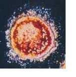
As mentioned earlier the evidence linking HIV-1 in the causation of AIDS is strong. The virus has been isolated repeatedly from the lymphoid cells, semen, vaginal secretions, saliva, breast milk, tears, urine, serum, and cerebrospinal fluid of patients with AIDS and those at risk of developing AIDS. In no instance has HIV-1 been recovered from a normal donor. Antibodies to HIV-1 envelope and core proteins have been found in more than 90% of patients with AIDS; by contrast, antibodies are almost never detected in healthy populations outside the defined risk groups. Several methods have been used to detect anti-HIV antibodies; these include the enzyme-linked immunosorbent analysis, Western blot analysis, RIA and similar technologies;. Furthermore, the simian immunodeficiency virus (SIV) has similar genetic organization as HIV-1 and cross reacts with it serologically, causing an AIDS-like illness in captive macaques.Most of the information presented has been derived from studies with HIV-1, the causative agent of AIDS in the United States and Central Africa. HIV-2 causes a similar disease primarily in West Africa. It is interesting to note that HIV-2 has greater (70%) sequence homology with SIV than with HIV-1 (40%), pointing to a possible common ancestry. According some publications, HIV-2 causes less severe immunodeficiency.
As in any disease, etiology of HIV-infection depends not only on causative agent, but also on conditions of virus-body interaction and on individual human reactivity.
It has been demonstrated, for example, that accompanying ulcerative venereal infectious diseases increase the chances for contamination in HIV sexual transmission. To illustrate the dependense of AIDS from individual reactivity, we may refer to the fact, that some individuals carrying particular mutant variant CCD5 chemokine receptor are resistent to HIV-infection due to hardships, encountered by virus in the process of internalization via this allele of co-receptor molecule. Their percentage is especially large among population of Baltic and Northern Europe. Perhaps, it is the result of some local natural selection, occured during an epidemic, experienced by their ancestors, maybe in pre-historical times.
Pathogenesis
Commitment of lymphocytes. Critical to the pathogenesis of AIDS is the depletion of the CD4+ helper T cells. CD4 molecule is the high-affinity receptor for HIV. Infection with HIV involves binding of the envelope glycoprotein gp120 with the CD4 molecule, followed by internalization of the virus. This explains the selective tropism of HIV for the CD4+ T cells and its ability to infect other CD4+ cells, particularly macrophages. But binding to CD4 is not sufficient for infection. HIV must at the same time bind co-receptors to enter into target cell. The main co-receptors are CXCR4 on T-helpers and the above-mentioned CCR5 of macrophages, both serving normally as receptors for chemokines (endogenous chemoattractants – RANTES, MCP-1 and, probably, some others).
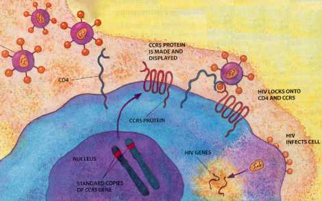
The affinity of HIV for immune cells changes over time: initially the virus is M-tropic - it invades macrophages by binding with its gp120 to CD4 and CCR5 on the APC surface (early phase).
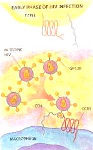
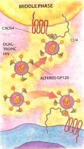
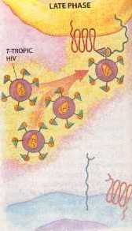
Eventually HIV become "dual-tropic" and its gp120 recognizes both CXCR4 on CD4-bearing T cells and CCR5 on APC (middle phase). Later still the bulk of viral population switches its preference to CXCR4 becoming "T-tropic" (late phase), destroy T helpers and contribute to the collapse of the immune system and the onset of AIDS.
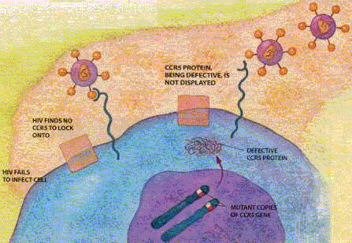
Ironically, the individuals who are in fact genetical victims of primary immunodeficiency lacking CCR5 co-receptors upon their macrophages (it makes some of their macrophage-dependent reactions somewhat invalid) are on the other hand very fortunate for they normally would not get infected even while contacting very intimately with an HIV patient: CCR5 protein being defective is not displayed, HIV finds no CCR5 to lock onto which means no way for HIV to enter their macrophages. It would take a very hot strain virus capable of entering the T-cells from the start to infect them.
Co-receptor binding is equally essential for the fusion, as is CD4-binding. Follicular dendritic cells may carry virus on their surface, binding it through Fc-receptor and anti-gp120 antibodies. This way is also additional for HIV fixation by macrophages. It is believed, that macrophages may be infected also, as a result of phagocytosis of HIV-infected cells. Viral gp41 protein is a fusogen, assisting in internalization.

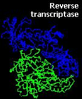
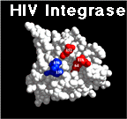
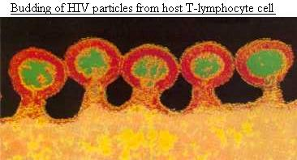
Once internalized, the viral genome undergoes reverse transcription leading to the formation of proviral DNA that is integrated into host cell’s genome. In an inactive cell, the viral life cycle is restricted at the stage of integration and the infection enters a latent phase. Alternatively, after activation of target cell by some signals, discussed below, translation of viral mRNA occurs and results in the formation of the HIV proteins, assembly of viral particle and budding of virions from cell membrane. The most decieving detail is that virus within CD4+ cell is stimulated to productive infection by the antigen-dependent and/or cytokine dependent CD4+ cell activation. Hence, the physiological stimuli, promoting growth and function of normal T-cells, kill the HIV-infected ones.As mentioned earlier, depletion of CD4+ T cells is a key event in the causation of AIDS. But how T cells are destroyed is far from clear. Several possibilities, each supported by at least some experimental data, have been suggested.
- immune attack of HIV-infected cells, by means of effectors (phagocytes, antibodies and complement), directed against viral and virus-induced neoantigens.
- Extensive budding and cumulation of unintegrated proviral DNA in target cells
- Apoptosis of CD4+ cells due to binding of gp120 ligand to CD+ with parallel activation of T-cell receptor.
- Fusion of infected and uninfected cells with syncytia (giant cell) formation – “ ballooning”, which cause cell death within several hours.
- Loss of T-progenitors due to their infection and due to loss of accessory cells and their cytokines.
In addition quantitative defects in CD4+ cells, there are qualitative defects as well. Best characterized is the inability of CD4+ cells to respond to antigens even when the antigen is presented by normal HLA-compatible antigen-presenting cells. This defect can be detected early in the course of HIV infection, prior to severe depletion of CD4+ cells. The functional impairment of CD4+ T cells may be explained in a variety of ways. Following HIV infection, the CD4-HIV complex is internalized and the T cell no longer expressed CD4+ molecules. Even if the infection remains latent (i.e., the T cell sirvives), such a cell would not be able to respond to antigen, because CD4+ molecules must interact with class II MHC antigens during antigen recognition.
An important mechanism of HIV-infection is the selective exhaustion of memory T-cells subset. Due to this HIV-patients are not able to develop boosted immune response against common wide-spread antigens. There are also other qualitative T-cell defects. Production of cytokines is impaired. Intracellular signalling in lymphocytes is deranged. The interaction between T-cells and NK-cells, as well as T-B interactions are far from normal. The imbalance between Th1 and Th2 functions is obvious. Production of IL-2 and IFNg is insufficient, but synthesis of IL-10 and IL-4 is relatively intact. This decreases the ability to realise the delayed hypersensitivity reactions and favors the prevailing of antibody-mediated responses.
For a long time, in course of HIV-infection the amount of peripheral T-cells in bloodstream remains sufficient. Moreover, the majority of blood CD4+ cells do not produce active virus in primary acute HIV-infection. Early in course of HIV-infection the virus resides mainly in lymphoid organs ( lymph nodes, tonsils, spleen). The peripheral level of T-cells stays near normal until the lymphoid organs are still able to establish their compensatory expansion. But, within 7-9 weeks from the onset of disease the number of peripheral CD4+ T-cells falls down from 1100 per mcl to near 500 per mcl. Loss of CD4+ lymphocytes leads to inversion of CD4/CD8 ratio in peripheral blood (normally about 2), and this index drops to Ѕ and even below. Similar shift may occur in some other viral infections, hence it is not 100% sign of HIV-infection.
Commitment of macrophages and dendritic cells. Although depletion of CD4+ cells is the most dramatic outcome of HIV infection, it is now apparent that monocytes and macrophages express CD4, although less extensively, and are infected by HIV, but with different sequels.
The major part of peripheral blood monocytes in HIV-infection are free from active virus production. But 10 to 50% of tissue macrophages, especially in lymph nodes, spleen, brain and lungs are in productively infected state.
Unlike CD4+ T cells, monocytes, although they allow viral replication, are relatively refractory to the cytopathic effects of HIV. This has several important implications: first, monocytes and macrophages may well be the major factory and reservoir for HIV in the body, and second, they provide a safe vehicle for HIV to be transported to various parts of the body, particularly the central nervous system. Another subtle but perhaps equally important consequence of monocyte infection may be direct transfer of HIV from the monocytes to CD4+ T cells when the two cells come in close contact in the process of antigen presentation. Infected macrophages function poorly: they do not produce enough IL-1, their chemotaxis is lazy, and their capacity to present antigens is somewhat decreased. Due to deficit of T-cell produced GM-CSF, the genesis of leukocytes in bone marrow may be deranged.
Low-level chronic or latent infection of macrophage lineage cells and T-cells is probably an important feature of HIV infection. It is widely believed that integrated provirus, without virus expression (latent infection) could remain in the cells from months to years, thus accouting for the long, often variable incubation period of AIDS. Macrophages may spread virus all over the body. Completion of the viral life cycle in latently infected cells occurs only following cell activation, which in the case of CD4+ T cells results in cell lysis. Such activation in vivo may result from antigenic stimulation especially by other infecting microorganisms, such as CMV, EBV, hepatitis B virus, or herpes simplex virus. These agents are proven to be polyclonal immunostimulators. When latently infected cells undergo antigenig boosting, the cytokins, produced within their micro-environment, especially TNFa (revealed in HIV-infection in increased concentrations), stimulate the transcription of HIV-viral genes. Cotran and co-authors (1997) called this paradoxal suicide of activated HIV-infected cells “subversion from within”.
The life style of most AIDS patients in the United States places them at increased risk of recurrent exposure to other sexually transmitted diseases, and in Africa, socioeconomic conditions probably impose a higher burden of chronic microbial infections. There may be other, as yet unidentified, noninfectious cofactors that may affect the duration of latent infection and hence the incubation period.
Anyway, the chronic opportunistic infections in AIDS promotes TNFa synthesis, and TNFa , in turn, activates latent HIV thus aggravating immunodeficiency.
Current concept of HIV-infection does not interprete it as pure T-cell immunodeficit.
Although general production of immunoglobulins in AIDS is increased (due to polyclonal immunostimulation by the opportunistic infectious agents and by HIV-derived gp120 itself and also because of increased IL-6 concentrations); the spectrum of these immunoglobulins mainly includes IgM of low affinity and autoimmune specificity. At the same time, due to lack of T-cell help, the induced antibody responses against new antigens are weak. Moreover, T-independent antigens also produce weakened responses in AIDS patients, witnessing for some intrinsic B-cell defects in HIV-infection. Due to imperfect B-cell response, HIV-infected patients may suffer from encapsulated bacteria (H. influenzae, S. pneumoniae), like those with B-cell immunodeficits.
Central nervous and endocrine system involvement by HIV. The pathogenesis of neurologic manifestations deserves special mention because, in addition to the lymphoid system, the nervous system is a major target of HIV infection. Several potential mechanisms capable of causing neuronal injury have been suggested.
The main effects are related to macrophage lineage cells in CNS. According to this view, infected monocytes act as a vehicle ("the Trojan horse") for entry of HIV into the brain. Once in the brain, the monocytes are somehow activated to release cytokines and enzymes that either are directly toxic to neurons or recruit other tissue-damaging inflammatory cells (TNFa , platelet activation factor, NO). These autocoids increase calcium entrance into neurons and may cause their necrosis and/or apoptosis. The pivotal role of monocytes in the pathogenesis of neurologic manifestations is supported by the detection of HIV footprints (mRNA, envelope glycoprotein antigens) in monocytes, microglia and multinucleated giant cells, derived by their fusion in cerebral lesions. Besides CD4, which present on some microglial cells, as an alternative entrance into CNS cells HIV may use galactozylceramide.
Infection of endothelial cells by HIV has also been reported, leading to the suggestion that permeability abnormalities in small vessels may disrupt the blood-brain barier and cause neurologic dysfunction.
Another explanation of neurologic impairment is offered by some investigators who noted that neuroleukin, a growth factor for neurons, shares partial (30%) sequence homology with HIV-gp120. In preliminary experiments, gp120 inhibited neuroleukin-induced growth of neurons, presumably by competing with neuroleukin for binding to the neurons. Some damage of CNS functions and structure in HIV-infection is, probably, caused by autoimmune mechanisms. Myelopathia, polyneuropathia and delay of cell growth in AIDS may be explained by autoallergic mechanisms. It has been shown that viral gp120 protein has quite substantial homology to insulin and epidermal growth factor (up to 70 % of shared amino-acid residues). Rapid progressing of cachexia and dystrophic changes in AIDS patients could be caused by autoantibodies, cross-reacting with anabolic hormonal regulators. Of course, high level of TNFa is also essential. Various autoantibodies (against cardiolipin, nuclear antigens, blood cells, thyreoglobulin, plasma proteins) are present in HIV-infection. Certain manifestations of AIDS, like hemocytopenia, may depend on this autoallergic mechanisms. Autoantibodies towards MHC-glycoproteins, registered in some HIV-infected patients may destroy the immunoregulation.
Stages of the disease
Three phases of interplay between HIV and immune system may be delineated in course of infection.
The early, acute phase is manifested in response of immunocompetent organism towards HIV.
Acute ilness resembling influenza or infectious mononucleosis may develop in 50 to 70% of the patients. The symtoms include sore throat, myalgias, fever, rash, and sometimes aseptic meningitis. The peripheral blood may show changes resembling infectious mononucleosis. This clinical picture overts 3-6 weeks after infection and resolves within 3 weeks. This phase proceeds on background of marked viremia. Reduction of peripheral blood CD4+ T-cell count is characteristic. Within 3 to 17 weeks of exposure antiviral antibodies appears, but patient is contagious before seroconversion and immunoglobulins do not establish anti-HIV protection. CD8+ antiviral T-cells appear and, as a result the titers of virus in blood begin to fall. Peripheral number of CD4+ cells increases to nearly normal level, but infection persists within lymphoid organs and cells of macrophage lineage.
The middle, chronic phase is underlied by containment of virus in immune system and may last for years (as long as 7 to 10 years duration of this phase has been reported). Virus continue its replication, but perished CD4+ cells are replenished by immune system via regeneration process. Clinically, during this phase patient may be asymptomatic (if CD4+ cell blood count is not less than 500 per microliter). But, in many cases persistent generalized lymphadenopathy develops following the acute illness (commonly, the CD4+ cell count in this patients is between 499 and 200 per microliter). Constitutional symptoms (fever, rash, fatigue, weight loss) may be associated with lymphadenopathy; they are usually mild and at least in some cases reversible. Immunologic abnormalities( depletion of CD4+ cells) are generally modest.
AIDS-related complex (ARC) develops in many patients in second chronic phase of HIV-infection and is characterized by long-lasting fever (3 months or longer) that may be intermittent or continuous, weight loss, and diarrhea. ARC patients are clearly symptomatic, but have no indicator diseases of AIDS, obligatory for bright final manifestation of HIV-infection.
Such a phenomenon reflects the diminishment of immune system resistant capacity. The immunologic tests in patients with ARC are clearly abnormal; CD4+ cell count is usually reduced to a level two standard deviations or greater below normal and the CD4-to-CD8 ratio is reversed.
The 3rd final, crisis stage of HIV-infection is manifested as classic AIDS. The critical border for bright manifestations of AIDS is below 200 CD4+ cells per microliter. The symptoms of previous stage are aggravated. In addition, anemia, thrombocytopenia, and marked hypergammaglobulinemia are also frequently present. Great increase in degree of viremia, checked by presence of viral antigen p24 in blood, occurs. Reactive hyperplasia of follicles, observed in lymphadenopathy of the prvious stage, is changed for depletion. There is a “wastland” morphological picture in lymph nodes, thymus and, sometimes, in spleen. Opportunistic infections, neoplasms and neurologic disorders complete the clinical picture of final AIDS.
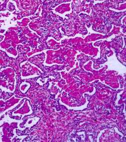
Interstitial Pneumonia caused by Pneumocystis carinii
The most typical manifestations of late AIDS are included into the list of “strong indicators of AIDS” (in bold letters):
- Pneumonia of interstitial character, caused by Pneumocystis carinii, unusual for individuals with normal immunity, affects more than 50% of AIDS patients. Another protozoal disease – toxoplasmosis may involve brain and eyes.
- Disseminated CMV infection may occur with retinitis and gut involvement.
- Papovavirus infection produces progressive multifocal leukoencephalopathy.
- Herpetic infection causes severe ulceration of perioral and anal area.
- Mycobacterioses , including tuberculosis and, especialy, atypical ones (caused by complex of M. avium-intracellulare) are common, with some unusual involvement, like arthrites and adrenalitis, causing Addison’s disease with prominent mineralocorticoid deficiency. A specific feature of chronic mycobacterioses and other infections in AIDS is that granuloma formation is minimal or even halted because of CD4+ cells deficit.
- Fungal infections, which may appear earlier than other opportunistic ones. Mucosal candidiasis is common and involves oesophagus. Cryptococcosis may manifest in meningitis. Cryptosporidiosis is manifested with obvious gut involvement and persistent diarrhea. Disseminated histoplasmosis, coccidiomycosis and Isospora belli infection also are possible, but less indicative.
- Other recurrent bacterial infections, highly probable in AIDS patients, are caused by Salmonella (including septicemia), Shigella and encapsulated bacteria (S. Pneumoniae, H. Influenzae). It is worth to mention, that recurrent bacterial otitis media and skin infections (pyodermia) are excluded from the list of AIDS-indicative criteria.
- Neoplasms, associated with AIDS are non-Hodgkin’s lymphomas (related to EBV-virus, as a rule B-lymphomas, quite frequent unusually localized – for example, in brain), invasive cervical uterine cancer in women (related to papillomavirus) and vascular tumor called Kaposi’s sarcoma. Most indicative for AIDS is the presense of Kaposi’s sarcoma and brain lymphoma before the age of 60.
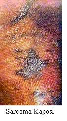
Sarcoma Kaposi remains the most typical neoplasm for AIDS patients, although its incidence in this population tends to decrease. This is probably most enigmatic element in the whole clinical picture of advanced AIDS. It is much more common among homosexual AIDS-patients (95%), than among heterosexual ones. Epidemic sarcoma Kaposi, observed in AIDS is highly contagious, agressive and multicentric. Two other variants of Kaposi sarcoma, described earlier (sporadic – among elderly Ashkenasy Jews and endemic – in tropical South-East Africa in young men and children of Bantu origin, spread approximately at the same geographic area as Burkitt’s lymphoma) are not contagious, less agressive (especially, sporadic form) and unicentric. It arises from primitive mesenchymal cells, forming vascular channels. However, the proliferation in Kaposi’s sarcoma is polyclonal. Moreover, different cell types, including endothelial spindle-shaped cells and smooth muscle cells, proliferate together during Kaposi’s phenomenon. Because of this, some authors (Fauci A.S., Lane H.C., 1994) even believe that we should not call this phenomenon “sarcoma” and interpret it as polyclonal reactive hyperplasia of vascular cells in response to growth-stimulating cytokines. Up till recent time there were absent any clear evidences of oncogenes expression or somatic mutations in Kaposi’s sarcoma cells. This makes the non-neoplastic concept of Kaposi’s phenomenon worth to mention.But, most common point of view classify it as a vascular neoplasm. Starting from skin vessels (where it has 3 stages – patches, plaques and nodules), sarcoma has invasive growth, and spreads from the vessels of lower extremities to visceral vessels (liver, intestine, lungs, lymph nodes). It displays some other signs, analogous to that of malignancies (poor differentiation of cells, fatal character of progressing – death within 3 years is common). At the same time, its metastasing is not proven and systemic spread is believed to be a result of multiple neoplastic transformation in situ (P. Chandrasoma, C. Taylor, 1998).
Anyway, the etiology of Kaposi’s tumor is related to superinfection with some additional non-HIV agent. As a candidate, specific type of herpes virus - HHV-8 – is considered. CMV genome is revealed within fusiform tumor cells. There is also a proposal that some spermal growth factors injected into blood may be of some relation. In response to polyinfectious syndrome, the organism of AIDS patients produces excess of several cytokines, able to promote Kaposi’s proliferation. These are: oncostatin M, basic fibroblast growth factor, GM-CSF, IL-6, IL-1b . They are thought to be the participants of the Kaposi’s sarcoma pathogenesis.
Clinical features of advanced AIDS include CNS involvement which is a significant problem in the AIDS population. 75 to 90% of patients demonstrate some clinical form of neurologic involvement at atopsy, and in many (30-50%) there are clinical manifestations as well. HIV present in cerebrospinal fluid of patients. Sometimes neurologic manifestations may be the sole or the earliest presenting feature of AIDS. At least four syndromes - an acute aseptic meningitis, a subacute encephalitis, a vacuolar myelopathy, and a peripheral neuropathy, AIDS-associated dementia - have been described. Besides autoimmune mechanisms and direct effects of viruses within CNS (cell fusion, cytopathic action, gp120 cytotoxicity –produced by HIV; progressive multifocal leukoencephalopathy - caused by papovaviruses), pathogenesis of neurological disorders in AIDS also includes indirect mechanisms, e.g. block of neuroleukin function by viral gp120 (see above). This viral protein is highly homologous to neuroleukin, which is stimulator of neural tissue growth. Hence, it may serve as neuroleukin’s competitive inhibitor.
HIV-infection is a disease with very poor forecast. The death, as a rule, occurs within 5 years after diagnosis. The reported case mortality rate in the 1997 was over 60% and tended to increase. However, there is a small group of long time nonprogressors, having HIV-infection without fatal drop of CD4+ cell count and living for a long time out of final crisis stage. Some of them carry the mutant strain of virus, devoid of nef gene. Others produce extraordinary strong immune response against HIV. This creates some hope to find and hit the weak point of HIV-infection and produce a vaccine or drug against it. Now the most effective (although, not saving) treatment is achieved by combination of reverse transcriptase inhibitors and protease inhibitors. Recently Armenian and Russian doctors reported about very promising preliminary results, achieved during clinical tests of new anti-HIV immunomodulating drug “armenicum”. Yet, the perspective to get highly effective vaccine or drug against this disease is still not apparent in immediate future. Before this possible happy event will befall, prophylaxis remains the most effective measure to stop pandemic of HIV-infection. The major precaution measures are established by education in safe sex and condom use, screening of blood and tissue donors, professional wariness for health care occupations, use of safe disposal needles and other invasive instruments, periodic health control in risk groups.
HIV-infection is one of the main topics of recent medical publications. The detailed discussion of all aspects related to it is not included into the tasks of this interactive manual. A reader interested in this particular item can acquire a lot of useful information from excellent review by H. Hollander and M. Katz “HIV-infection” (1997).